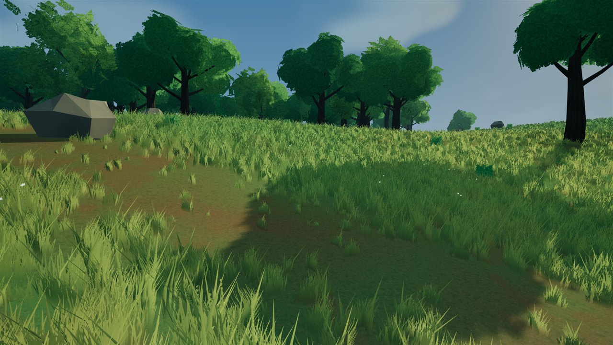
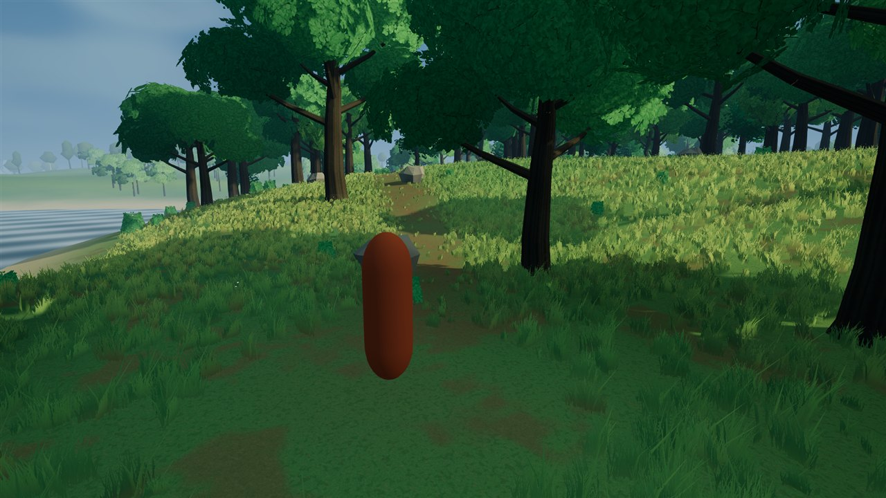
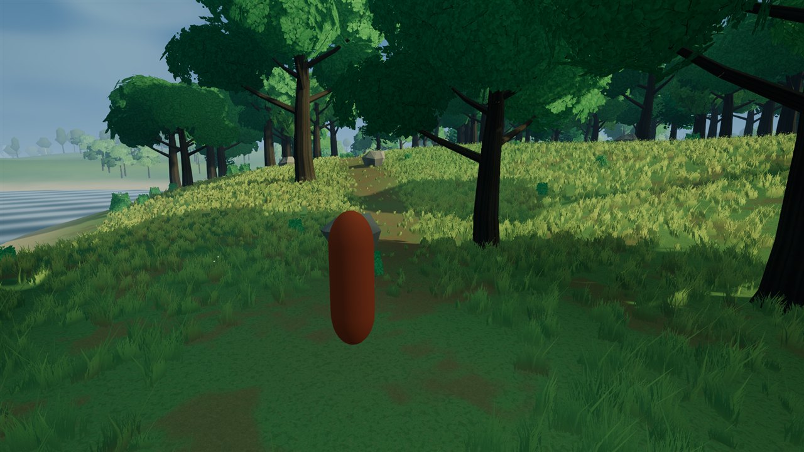
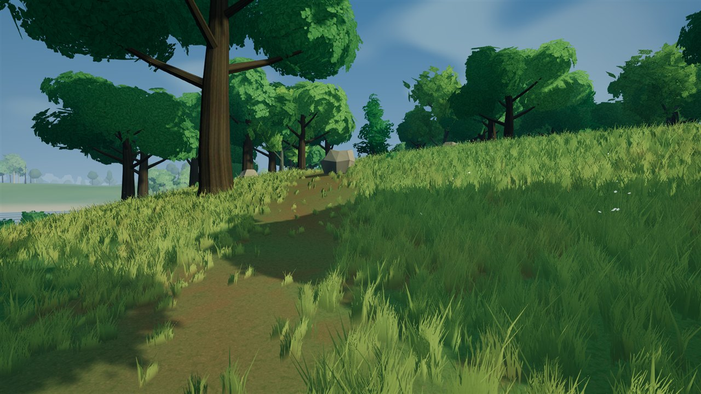
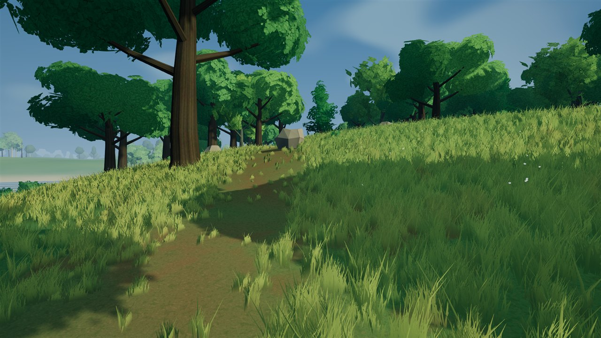
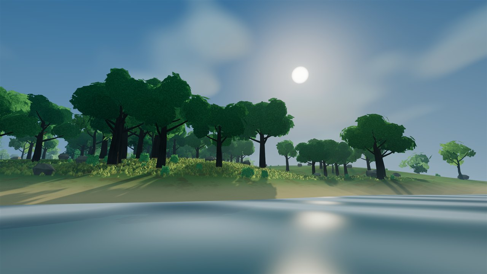
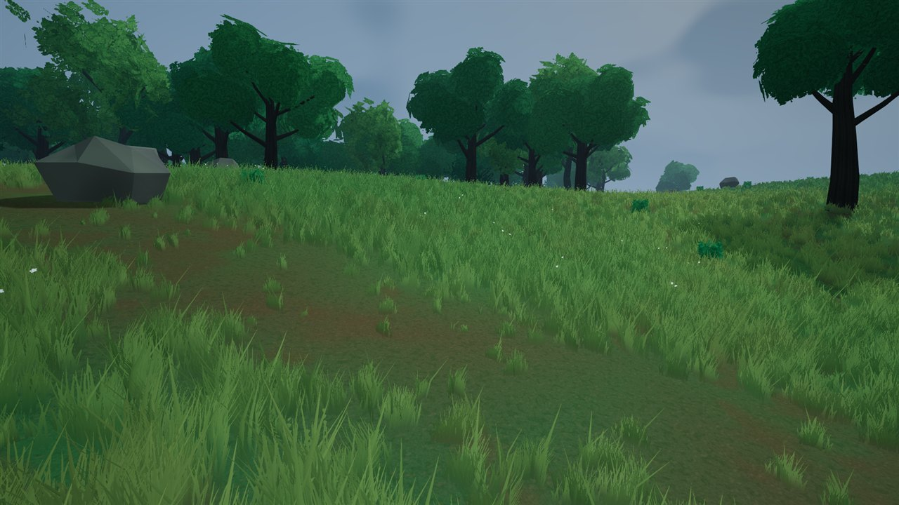

LATEST UPDATE / OCTOBER 27, 2026
A closer look at the meadow.
Five native in-game comparisons, with the latest image first. This pass adds more irregular grass lean and tip color, plus subtle leaf surface and interior-lighting adjustments on reference trees. Crown shapes still need work.
These show the opt-in meadow reference, not normal gameplay. Its extra trees have solid trunks but are non-harvestable scenery. This is a screenshot gallery, not a playable mobile game. Tap any image to inspect the full-resolution original.
Day / MATCHED COMPARISON
Grass and forest edge

Day / MATCHED COMPARISON
Ordinary player camera


Day / MATCHED COMPARISON
Closer grass inspection


Day / MATCHED COMPARISON
Wide landscape

Overcast / MATCHED COMPARISON
Overcast lighting control
